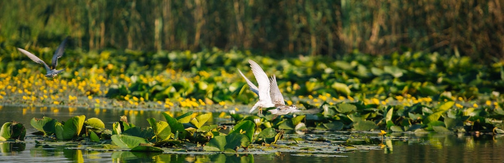
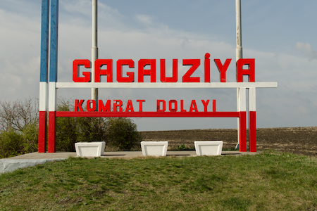
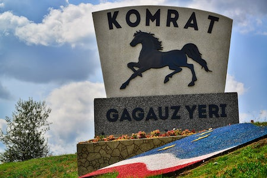
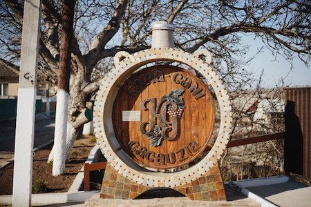
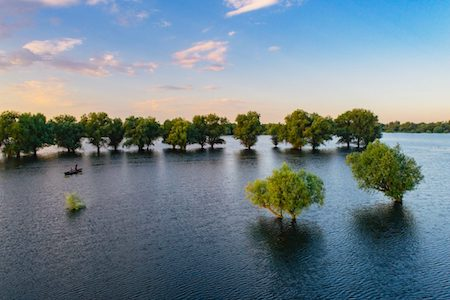
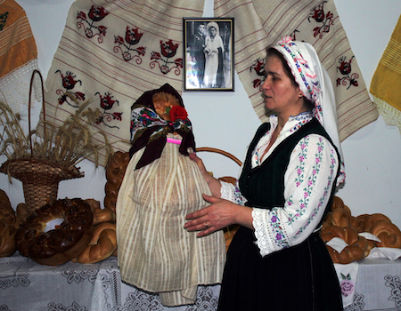
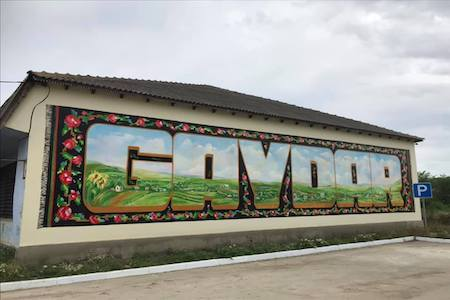
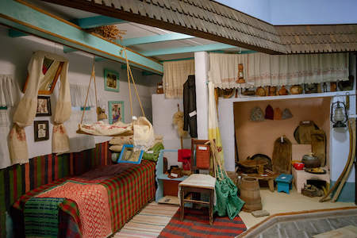
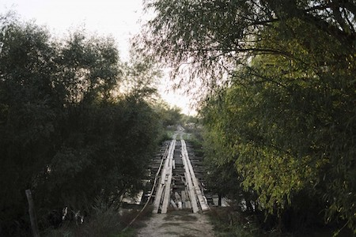
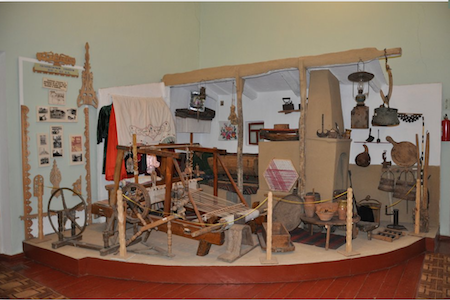

Sudul Moldovei

Sudul Moldovei este o regiune plină de farmec, unde natura, tradiţiile şi gastronomia se îmbină armonios. Aici poţi descoperi peisaje spectaculoase, sate autentice şi oameni primitori. Fiecare loc are propria poveste şi oferă experienţe diferite. Este destinaţia ideală pentru cei care caută relaxare şi autenticitate.Sudul Moldovei este o regiune plină de farmec, unde natura, tradiţiile şi gastronomia se îmbină armonios. Aici poţi descoperi peisaje spectaculoase, sate autentice şi oameni primitori. Fiecare loc are propria poveste şi oferă experienţe diferite. Este destinaţia ideală pentru cei care caută relaxare şi autenticitate.
Explorează locaţiile din Sudul Moldovei
Găgăuzia

Găgăuzia este o regiune autonomă din sudul Republicii Moldova, cunoscută pentru identitatea sa culturală distinctă. Aici tradiţiile sunt păstrate cu grijă şi transmise din generaţie în generaţie. Cultura găgăuză îmbină influenţe turcice cu elemente moldoveneşti şi balcanice. Vizitatorii pot descoperi obiceiuri unice, festivaluri locale şi o atmosferă autentică. Bucătăria tradiţională este bogată şi diversă, oferind preparate specifice regiunii. Oamenii sunt primitori şi deschişi, ceea ce face experienţa şi mai plăcută. Peisajele din zonă sunt liniştite şi potrivite pentru relaxare. Regiunea oferă atât experienţe culturale, cât şi naturale. Este o destinaţie ideală pentru cei care vor să descopere o altă faţă a Moldovei. Găgăuzia rămâne un loc unde tradiţia şi modernitatea coexistă armonios.
Comrat

Comrat este capitala Găgăuziei şi principalul centru cultural şi administrativ al regiunii. Oraşul are o atmosferă calmă şi prietenoasă, fiind potrivit pentru vizite relaxante. Aici se găsesc instituţii importante, muzee şi locuri care reflectă cultura locală. Vizitatorii pot explora istoria regiunii şi tradiţiile găgăuze. De asemenea, oraşul oferă oportunităţi de a gusta preparate tradiţionale autentice. Localnicii sunt ospitalieri şi deschişi cu turiştii. Comrat este adesea punctul de plecare pentru explorarea altor atracţii din sud. Evenimentele culturale organizate aici atrag vizitatori din diferite zone. Oraşul îmbină elemente moderne cu tradiţii vechi. Este un loc ideal pentru a înţelege mai bine viaţa din Găgăuzia.
Kara Gani

Kara Gani este o locaţie mai puţin cunoscută, dar care păstrează autenticitatea vieţii rurale. Aici tradiţiile sunt încă respectate şi fac parte din viaţa de zi cu zi. Vizitatorii pot observa stilul de viaţă simplu şi apropierea oamenilor de natură. Zona oferă linişte şi un ritm de viaţă mai relaxat. Este un loc potrivit pentru cei care caută experienţe autentice, departe de agitaţie. Peisajele sunt naturale şi nealterate, oferind un cadru plăcut pentru vizită. Cultura locală este vizibilă în obiceiuri şi activităţi cotidiene. Interacţiunea cu localnicii poate fi o experienţă memorabilă. Kara Gani reflectă tradiţiile sudului Moldovei. Este o destinaţie ideală pentru exploratori curioşi.
Lacul Beleu

Lacul Beleu este una dintre cele mai importante rezervaţii naturale din Republica Moldova. Acesta face parte din Rezervaţia Biosferei "Prutul de Jos". Zona este cunoscută pentru biodiversitatea sa impresionantă. Aici pot fi observate numeroase specii de păsări, inclusiv unele rare. Lacul este înconjurat de vegetaţie bogată şi peisaje pitoreşti. Este un loc ideal pentru iubitorii de natură şi fotografie. Vizitatorii se pot bucura de linişte şi aer curat. De asemenea, este potrivit pentru plimbări şi activităţi în aer liber. Atmosfera este calmă şi relaxantă. Lacul Beleu oferă o experienţă naturală de neuitat.
Muzeul Pâinii

Muzeul Pâinii din Văleni este dedicat unei tradiţii esenţiale din cultura moldovenească. Aici vizitatorii pot afla cum era preparată pâinea în trecut. Procesul de coacere este prezentat pas cu pas, într-un mod autentic. Pâinea are o semnificaţie importantă în viaţa şi obiceiurile oamenilor. Muzeul evidenţiază rolul acesteia în sărbători şi tradiţii. Atmosfera este una caldă şi primitoare. Vizita oferă o lecţie valoroasă despre trecut. Este un loc potrivit pentru toate vârstele. Experienţa este educativă şi interesantă. Muzeul contribuie la păstrarea patrimoniului cultural.
Muzeul Viu al Covorului

Muzeul Viu al Covorului este un loc unde tradiţia ţesutului este păstrată vie. Vizitatorii pot vedea cum sunt realizate covoarele manual. Fiecare model are o semnificaţie şi o poveste aparte. Meşteşugul este transmis din generaţie în generaţie. Muzeul oferă o experienţă interactivă şi autentică. Culorile şi modelele covoarelor sunt impresionante. Este un exemplu important de artă populară. Vizita permite înţelegerea valorii muncii tradiţionale. Atmosfera este una caldă şi culturală. Este un loc care inspiră şi educă.
Muzeul de Istorie din satul Slobozia Mare

Muzeul de Istorie din Slobozia Mare prezintă trecutul comunităţii locale. Aici sunt expuse obiecte vechi, documente şi fotografii. Vizitatorii pot înţelege evoluţia satului de-a lungul timpului. Muzeul oferă informaţii despre viaţa de zi cu zi din trecut. Este un loc important pentru păstrarea memoriei colective. Expoziţiile sunt interesante şi educative. Atmosfera este autentică şi liniştită. Vizita ajută la înţelegerea tradiţiilor locale. Este potrivit pentru cei pasionaţi de istorie. Muzeul reflectă identitatea regiunii.
Drumul lui Petru Rareş din satul Văleni

"Drumul lui Petru Rareş" este un traseu turistic care combină istoria cu natura. Acesta oferă vizitatorilor ocazia de a descoperi locuri pline de legendă. Traseul trece prin peisaje frumoase şi zone liniştite. Este potrivit pentru drumeţii şi explorare. Vizitatorii pot învăţa despre evenimente istorice importante. Experienţa este atât educativă, cât şi relaxantă. Natura din zonă este bine conservată. Este un loc ideal pentru iubitorii de aventură. Traseul oferă o perspectivă asupra trecutului. Este o destinaţie atractivă pentru turişti.
Muzeul Găgăuz de Istorie şi Etnografie din Beşalma

Acest muzeu este unul dintre cele mai importante centre culturale din Găgăuzia. Aici sunt prezentate tradiţiile, obiceiurile şi istoria găgăuzilor. Vizitatorii pot vedea costume tradiţionale şi obiecte vechi. Expoziţiile oferă o imagine completă asupra vieţii din trecut. Muzeul are un rol important în păstrarea identităţii culturale. Atmosfera este autentică şi educativă. Este un loc ideal pentru cei interesaţi de etnografie. Vizita oferă informaţii valoroase despre comunitate. Muzeul este bine organizat şi interesant. Este o oprire esenţială în regiune.